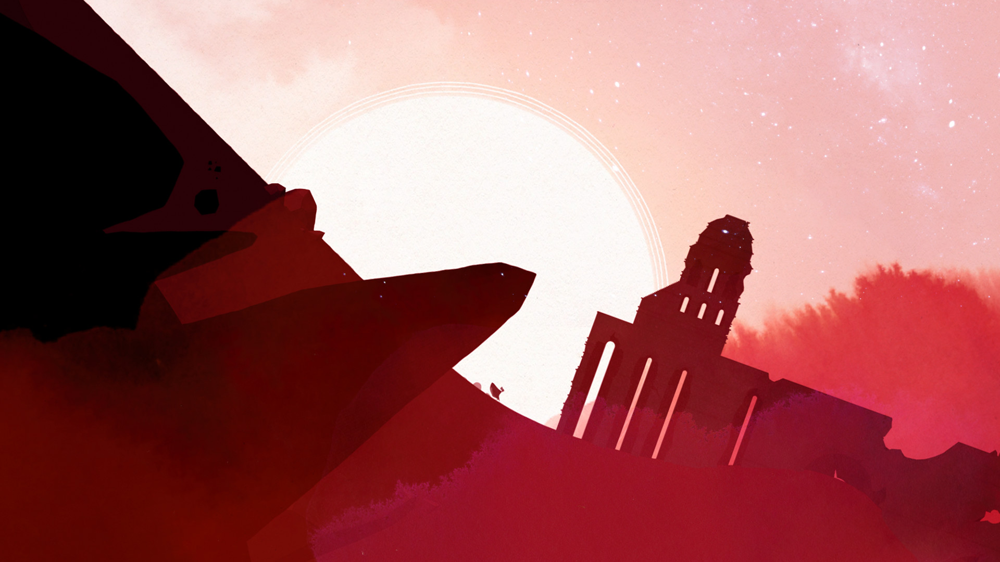
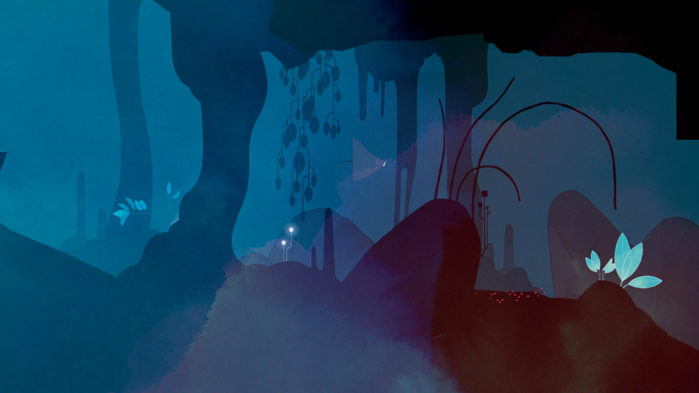
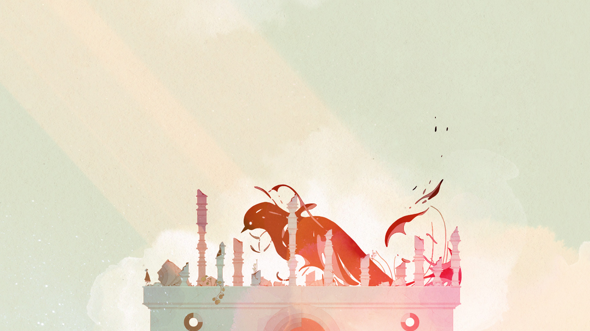

Gris is a hopeful young girl lost in her own world, dealing with a painful experience in her life. Her journey through sorrow is manifested in her dress, which grants new abilities to better navigate her faded reality.
As the story unfolds, Gris will grow emotionally and see her world in a different way, revealing new paths to explore using her new abilities.
As the story unfolds, Gris will grow emotionally and see her world in a different way, revealing new paths to explore using her new abilities.

GRIS is a serene and evocative experience, free of danger, frustration or death. Players will explore a meticulously designed world brought to life with delicate art, detailed animation, and an elegant original score. Through the game light puzzles, platforming sequences, and optional skill-based challenges will reveal themselves as more of Gris's world becomes accessible.
